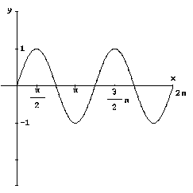

La computer graphics è il settore dell'informatica che riguarda l'impiego del calcolatore nel campo della grafica, e quindi lo studio di tecniche di rappresentazione delle informazioni atte a migliorare la comunicazione tra uomo e macchina.
La grafica consente che l'interattivita uomo - macchina avvenga tramite figure, schemi e diagrammi offrendo alternative alle semplici descrizioni. Infatti, per esempio, un grafico può sostituire una tabella di numeri, e permette di evidenziare gli elementi fondamentali e le caratteristiche in modo immediato.

Grafico della funzione seno
Anche i sistemi operativi, come Windows95/98/NT, utilizzano interfacce grafiche basate su sistemi desktop-window, rendendo più semplice l'utilizzo di un computer tramite menù, icone e bottoni sullo schermo.